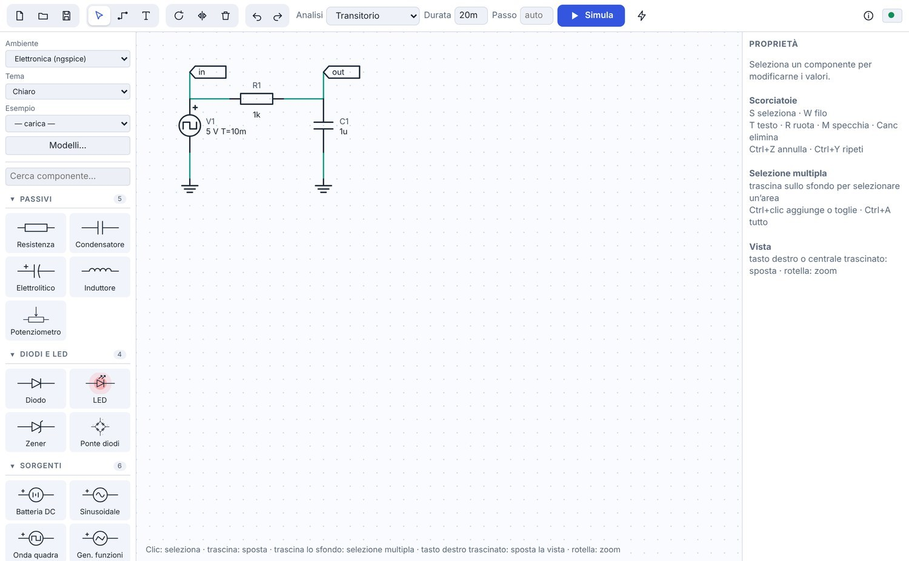
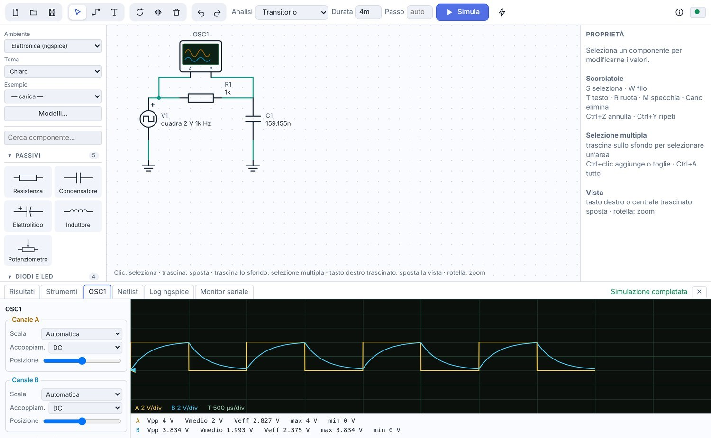
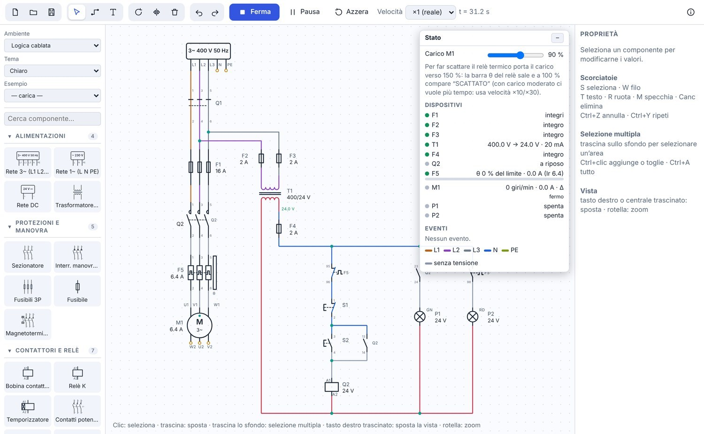

Segui il segnale.
Misura circuiti in continua e nel tempo, esplora i diagrammi di Bode e importa modelli SPICE reali.
→Disegna circuiti analogici e digitali, programma schede compatibili Uno e Nano oppure costruisci impianti e PLC in Ladder. Simula, misura e stampa i tuoi schemi in un laboratorio didattico in italiano.

Un’idea prende forma.
La simulazione fa il resto.
Dai primi collegamenti ai sistemi più articolati: scegli l’ambiente e sperimenta in prima persona.
Analizza tensioni e correnti, osserva i segnali nel tempo o esplora la risposta in frequenza. Con ngspice, la simulazione elettronica diventa un’esperienza da interrogare.

GiSquare Circuiti porta l’esperimento sullo schermo: gli studenti costruiscono il circuito, cambiano i valori e osservano le conseguenze, senza dover iniziare da un banco attrezzato.
Si parte da un esempio.
Apri un circuito già pronto, poi esploralo.
Si modifica una cosa per volta.
Valori e collegamenti sono sotto controllo.
Si ragiona su ciò che si osserva.
Grafici, misure e stati rendono visibile il risultato.

ESPERIMENTO N. 04Il motore non parte.
Da dove cominciamo?
Oltre quaranta esempi guidano dalla prima misura ai circuiti analogici, dai programmi per microcontrollori ai PLC e alla ricerca guasti.
Misura circuiti in continua e nel tempo, esplora i diagrammi di Bode e importa modelli SPICE reali.
→Programma schede compatibili Uno e Nano con display, sensori, servomotori e monitor seriale.
→Simula motori e guasti, programma PLC e regola processi con ingressi analogici e sensori.
→Costruisci gli schemi, osserva il comportamento e porta il lavoro fuori dallo schermo.
Punto di lavoro, transitorio e risposta in frequenza. Usa multimetro, wattmetro, oscilloscopio a due canali e generatore di funzioni.
Esplora diodi, transistor, MOSFET, operazionali, logica digitale, timer 555, motori, relè e protezioni. Importa modelli SPICE dei componenti reali.
Programma PLC a 24 V o 230 V nell’editor Ladder. Usa temporizzatori, contatori, fronti, confronti, blocchi SCALA e sette sensori analogici 0–10 V e quattro sensori di prossimità (induttivi e capacitivi).
Organizza lo schema con testi, etichette e colori dei fili. Salva in .gsq, compila il cartiglio e stampa o esporta in PDF su foglio A4 o A3.
44 esempi pronti e 8 esercitazioni guidate accompagnano il manuale completo.
Scarica GiSquare Circuiti e prova i tre ambienti. La beta è gratuita per uso didattico e personale, ed è aperta a docenti, studenti, scuole e privati.
La beta è gratuita per uso didattico e personale; l’uso commerciale richiede un accordo scritto. Non ridistribuire il programma o l’installer: condividi il link al canale ufficiale. È una versione di prova; conserva copie dei tuoi circuiti.
Privacy del programma: non invia circuiti o dati personali all’autore. La versione installata controlla gli aggiornamenti tramite GitHub; puoi disattivare il controllo nelle Informazioni. Leggi l’informativa.
Le simulazioni usano modelli a scopo formativo, non certificati. Non sostituiscono il progetto e le verifiche di un professionista su impianti reali.
Dettagli nel manuale ↗Dalla prima schermata alle analisi, trovi una guida rapida e un manuale completo per imparare a usare ogni ambiente.